<Kachi />
description
kachi (short for nyekachi) is a product designer. he is the sole designer at ridescan ai, across three products on the web and on universal robots cobots.
props
- role
- "head of product design"
- company
- "ridescan ai"
- location
- "abuja, nigeria"
- remote
- true
states
- default
- designing
- hover
- curious
- pressed
- still fine
- disabled
- asleep (utc+1)
changelog
- v3.0
- 2024-09. head of product design, ridescan ai.
- v2.0
- head of product, cashex.
- v1.0
- ux/ui designer, cashex.
see also
your interests go here
Visual and UI design, one frame at a time.
nothing here yet.
Case studies and products I've designed, shipped, or am still nudging by one pixel.
RideScan AI Cloud
Independent AI monitoring for autonomous robots and drones. I led design from zero to launch in six months, as Head of Product Design. 2025.
RideScan Developer Console
The technical layer under the operator dashboard, where robotics engineers build pipelines, connect robots to the RideScan API and debug them. Head of Product Design. 2025.
RideScan AI
Head of Product Design since September 2024. Sole designer across three products, on the web and on Universal Robots cobots.
more case studies to add
CashEx
Head of Product, promoted from UX/UI Designer. Cross-border payments.
case studies to add
projects / ridescan ai cloud
RideScan AI Cloud
Launching independent AI monitoring for autonomous systems.
- role
- Head of Product Design
- year
- 2025
- type
- B2B SaaS. Web app and API
- length
- Six months, zero to launch
Overview
RideScan is an independent AI monitoring platform for autonomous robots and drones. Every monitoring tool on the market was first-party, built by the same manufacturers that sell the robots, so operators had no neutral way to verify that a system was safe or performing well.
I owned research, information architecture, interaction design, visual design and prototyping.
The problem
The first three weeks were discovery: interviews with eight robotics operators, four fleet managers, two compliance officers and three robotics engineers about their daily workflows and their bad days. Three problems came out of it.
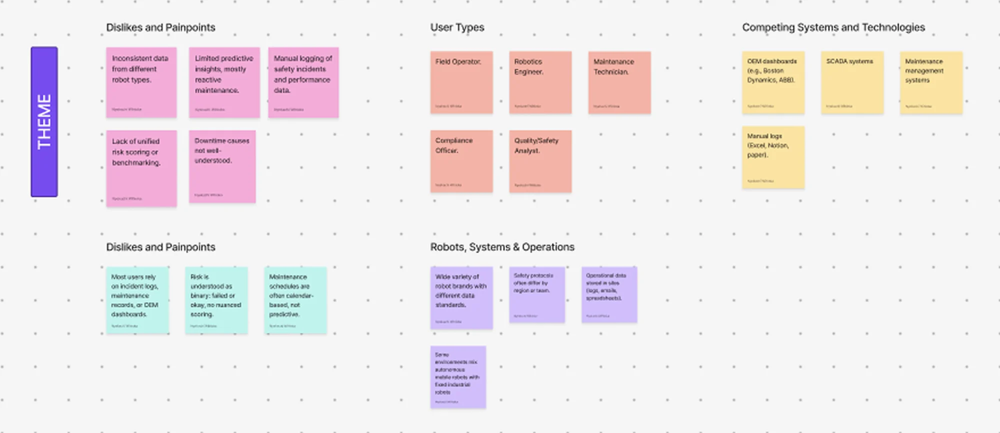
Themes from the discovery interviews. 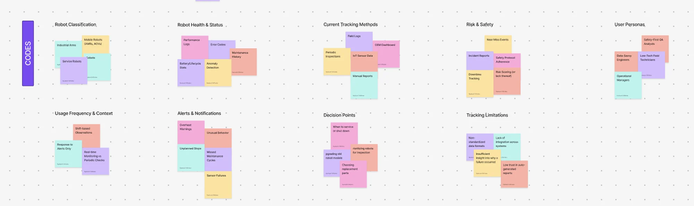
The same notes, coded. First-party diagnostics are limited by design. A self-check only finds the failures it was programmed to find. New failures, sensor drift in a particular environment and slow degradation across a fleet go unnoticed. One operator called it "getting a health report from someone who has a financial interest in telling you you're healthy."
Fleet data is fragmented. Operators often run 5 to 12 robots from different manufacturers, each with its own telemetry spread across dashboards, CSV exports and vendor portals. Comparing robots or judging risk across the fleet took heavy manual work.
The tools produce data, not decisions. Dashboards showed hundreds of metrics with no priority, and left the interpretation to operators who were short on time.
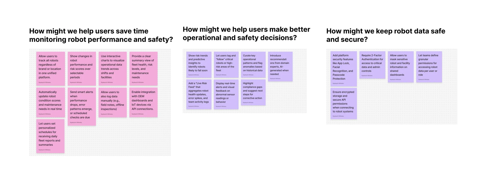
How might we: the three questions that framed the work. A senior fleet manager said, "We know something is wrong before the robot tells us." That became the brief: close the gap between what the data knows and what the operator can act on.
Three kinds of user
Fleet operator. Needs a fast triage view at the start of a shift, acts on recommendations, not raw data, and loses trust when noise sits next to signal.
Robotics engineer. Needs depth: raw telemetry, historical baselines, export. Skeptical of AI output, so every AI conclusion has to trace back to source data.
Compliance officer. Needs an audit trail: what was flagged, when, by what method, what was done and by whom, in reports a regulator will accept.
The answer was progressive disclosure. One decision surface for operators that opens into engineer-level depth, and a separate read-only audit layer for compliance, all on a shared set of components.
Key decisions
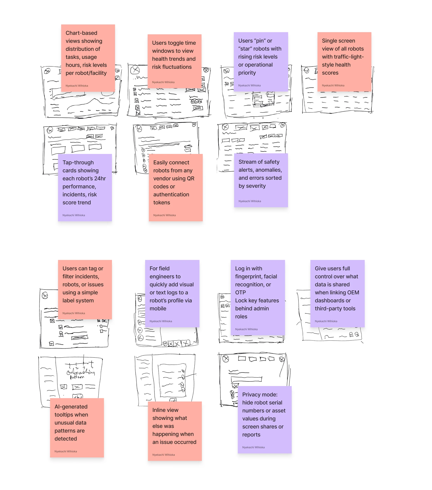
Early sketches, one idea per note. The risk score card, 14 iterations. Early versions used traffic-light colours and a single number. In testing, operators over-trusted green, engineers found the score too coarse, and regulators rejected inputs they could not trace. The final card has a top-line score, a confidence band showing how certain the model is, a factor breakdown ranked by contribution, and a recommended action. It adapts by role: operators see the summary and the action, engineers the full detail, compliance a time-stamped read-only version.
Fleet overview, built for triage. The goal was triage across 50 or more robots in under two minutes. I rejected a list, because it makes operators scan rows and work out their own priorities. Each robot is a card in a grid: colour intensity for risk, a status ring for connectivity, a badge for anomaly count. The grid sorts itself by risk, and operators can pin robots and group them by site or mission. Operators said it was "immediately obvious where I need to go."
Mandatory acknowledgement. I made acknowledging an alert mandatory, against the product team's worry about the burden. When dismissal was optional, operators cleared queues without reading. Confirm, escalate, or dismiss with a note turns the decision into data. In testing it raised engagement with alert content, and the audit trail mattered in three regulatory reviews.
Mission summaries that lead with the outcome. Every completed mission gets an AI-written summary. Operators preferred the outcome first, as in "Mission completed with 2 anomalies requiring review." The same summaries feed the compliance reports, exported as PDFs.
Key screens
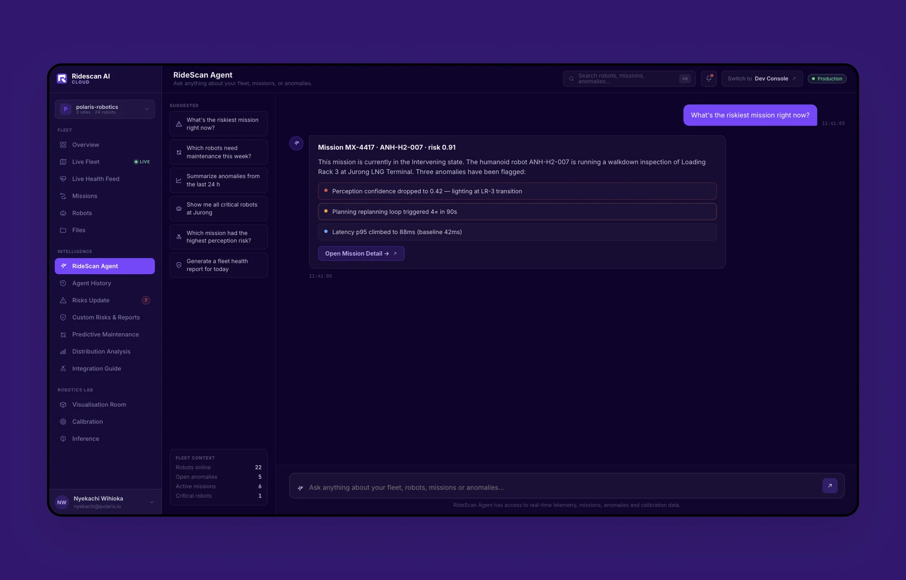
RideScan Agent. Ask about the fleet, missions or anomalies in plain words. 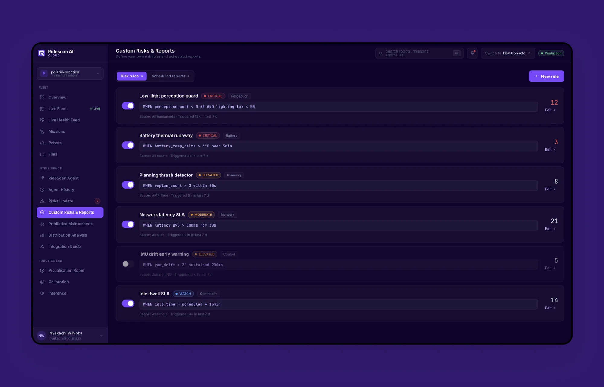
Custom Risks and Reports. Teams define their own risk rules. 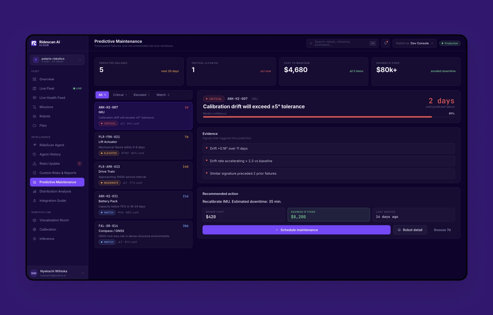
Predictive Maintenance. Forecast failures, the evidence behind each, and a recommended action. How people use it
Operators scan the fleet overview for red and amber cards, open the highest-risk robot, read the score and the latest mission summary, then act, escalate or dismiss with a note. After launch that loop averaged under four minutes, down from over ten.
Engineers arrive from an escalation link, expand the risk card, check the anomaly timeline against baselines, then export telemetry or leave a diagnostic note that the operator sees.
Compliance officers use a read-only audit portal to filter by date, robot or anomaly type and export PDFs. Editing is impossible by design.
Constraints and trade-offs
API latency. A risk score takes 3 to 8 seconds to arrive after data comes in. A plain loading state made operators anxious, so I redesigned it as an active "computing" indicator with progress signals. The wait felt shorter although the latency did not change.
Signal threshold. The AI detects dozens of signals per mission. With engineering, and two rounds of testing with real operators, I set a threshold: below it findings are logged silently, above it they always appear with full context. It was one of the most consequential decisions in the project.
Impact
- 60%
- faster operator triage than the previous workflow
- 3
- regulatory reviews passed using the platform's audit reports
- 12 months
- to product-market fit in logistics and manufacturing
- 4+
- robot types supported at launch
RideScan Cloud became the flagship product. Its independence and auditability were the main differentiator in enterprise sales, and the risk score card and acknowledgement flow were later adopted across the rest of the RideScan suite.
Reflection
The hardest problem in an AI product is not making the AI smarter. It is deciding what the AI is allowed to say, and how. Restraint, precision and knowing the context people decide in mattered most.
projects / ridescan developer console
RideScan Developer Console
Making complexity navigable for engineers.
- role
- Head of Product Design
- year
- 2025
- type
- B2B SaaS. Web and API
Overview
The Developer Console is the technical layer under the operator dashboard. Robotics engineers use it to build execution pipelines, connect autonomous systems to the RideScan API, watch live telemetry and manage low-level controls.
I led the design end to end and put usefulness ahead of looks. It was the most technically demanding project in the suite.
The problem
Before the console, documentation was sparse and webhook setup was a single basic screen. Engineers worked largely blind. I interviewed six robotics engineers and two enterprise integration leads, from first setup through to maintenance. Three pain points came out of it.
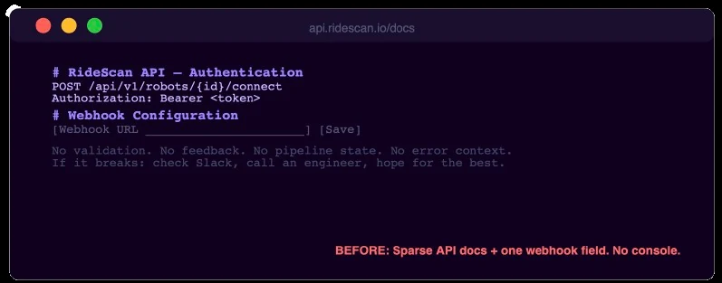
Before: sparse API docs and one webhook field. No console. No view of pipeline state. Engineers could not tell whether a pipeline was running, queued, blocked or failed.
Errors they could not trace. Codes and traces were accurate but unhelpful, with no context and no next step.
Onboarding ran on tribal knowledge. There was no guided flow and no validation.
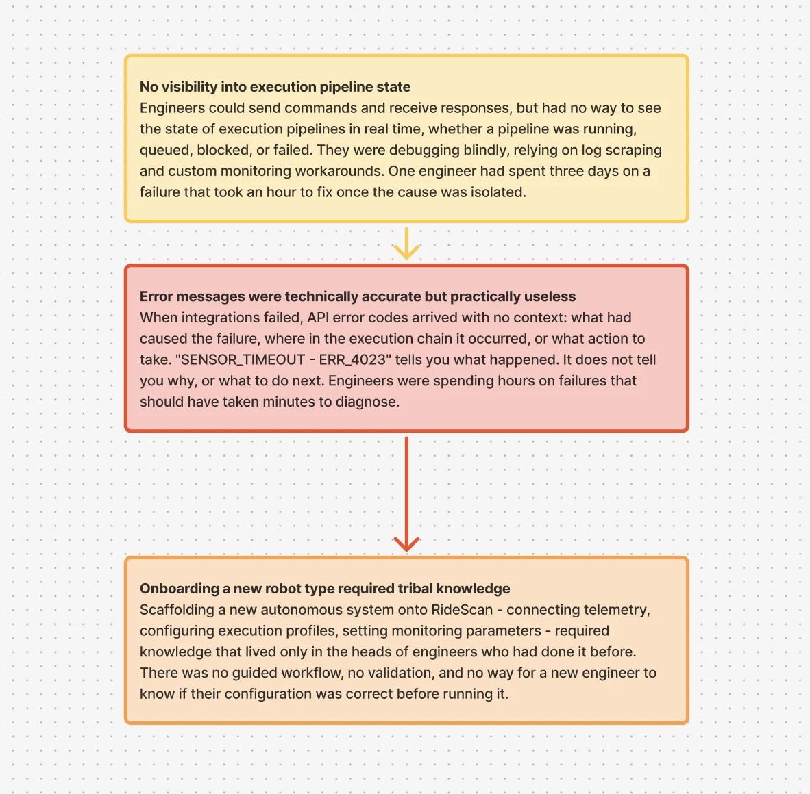
The three pain points, in full. A robotics engineer on the integration team put it this way: "I spent three days debugging an integration last month. An hour of that was the actual problem."
Designing for engineers
Engineers distrust polish that looks like it is hiding complexity. The goal was to be useful, not "user-friendly" in the usual sense. Three principles framed the work.
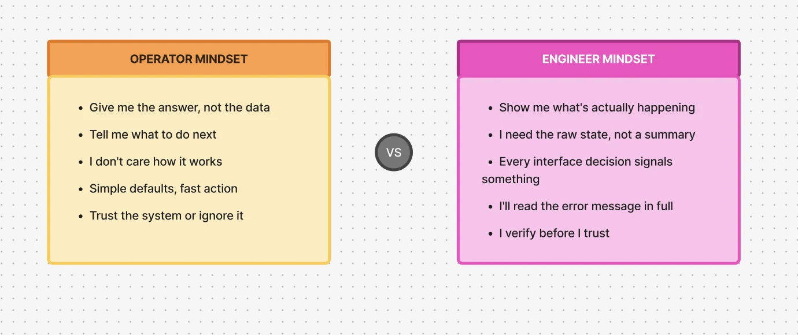
Operator mindset against engineer mindset. Expose, don't abstract. Show what the system is actually doing. Depth is the default and summaries come second.
Every state is meaningful. Empty, loading, partial and error states are each designed on purpose.
Copy is part of the design. Error messages, logs and tooltips are primary UX, held to a standard of clear, specific and honest.
Key decisions
Pipeline scaffold wizard: guided configuration with validation. A step-by-step flow that asks only for what each stage needs, validates inputs against the API in real time and shows a live preview. It checks that endpoints are reachable and flags compatibility problems early, then gives a summary to review before anything is committed.
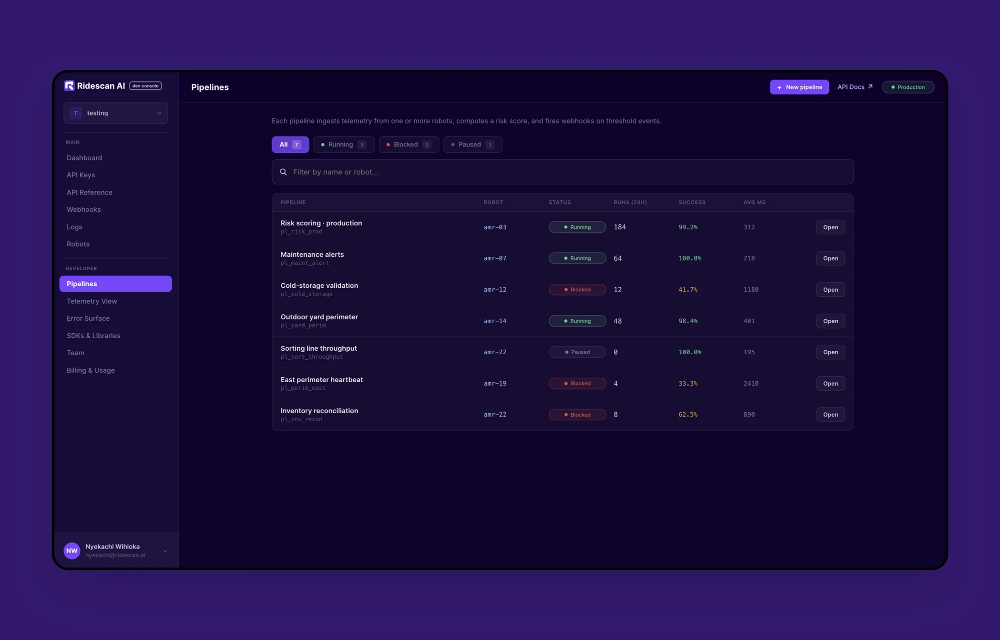
Pipelines. Every pipeline with its state, and the way in to creating a new one. Execution pipeline monitor: state in real time. A swimlane view of each pipeline, with stage nodes and anomaly flags. It shows a readable status next to the raw API state code. I argued against hiding the raw codes: the research showed engineers trust a system more when they can see its underlying state.
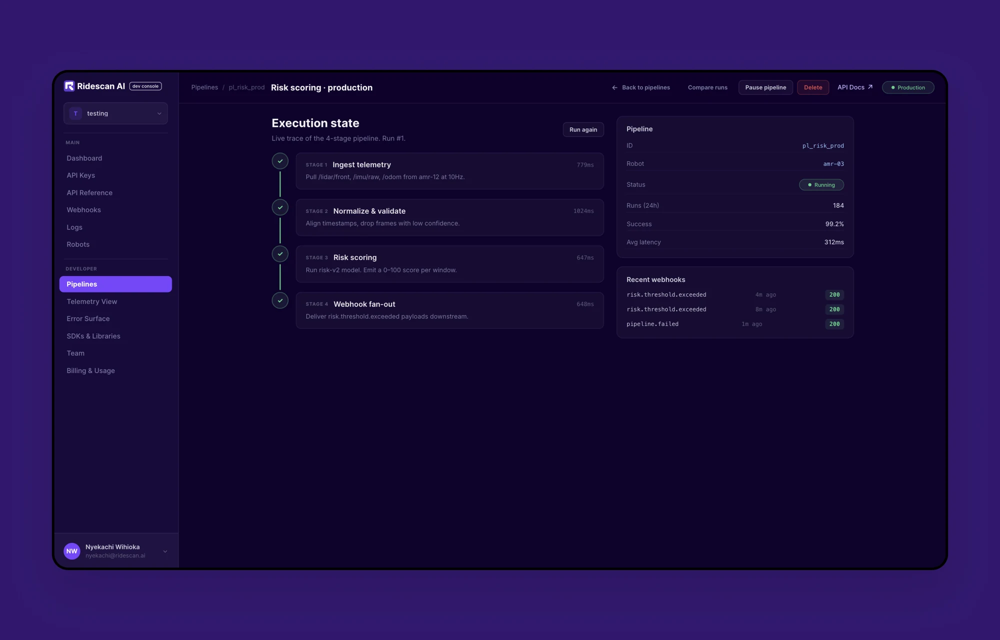
Execution state. A live trace of each stage of a pipeline. Contextual error diagnosis: from code to cause to action. Raw codes are replaced with three layers: the classification and code, a plain-language cause, and a recommended action. Common errors link to documentation, and "Compare with last working state" shows what changed.
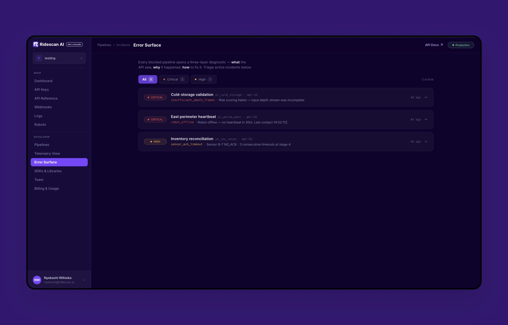
Error Surface. Each blocked pipeline with its code and a plain-language cause. 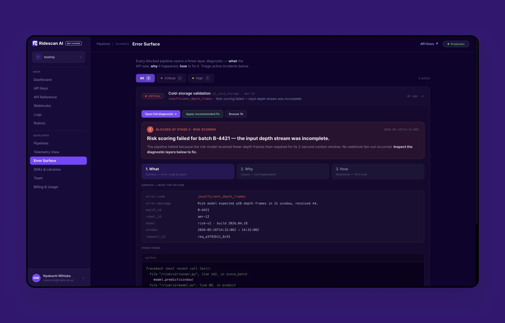
One error opened up: what the API saw, why it happened, how to fix it. Telemetry live view: raw data, visualised in context. A split panel. On the left, the raw stream, filterable and exportable as JSON. On the right, time-series charts with baseline overlays. Engineers can annotate events, and annotations stay in the audit log and show up in the operator dashboard.
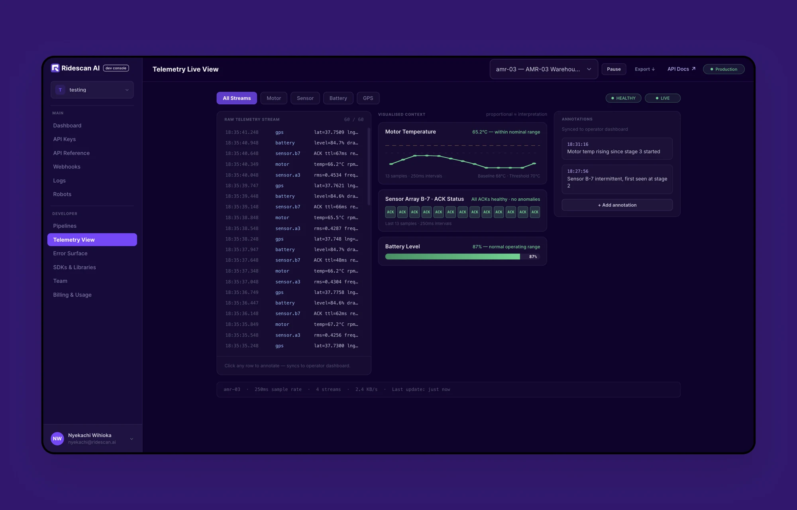
Telemetry Live View. Raw stream, charts with baselines, and annotations. How people use it
Setting up. Engineers onboard a robot through the scaffold wizard. Average onboarding fell to 47 minutes, from over half a day.
Debugging. They move from the pipeline monitor to the error surface to the telemetry view. The structured errors and "Compare with last working state" were the improvements people mentioned most.
Constraints and trade-offs
Scope. The wizard, the pipeline monitor and the error surface shipped in the first version, because research showed they cost engineers the most time. The telemetry live view followed in the next release.
Density against usability. Solved with type: monospace for raw data, proportional type for interpreted summaries.
Impact
- 47 min
- average time to onboard a new robot, down from over half a day
- ~70%
- fewer integration support tickets after launch
- 3
- enterprise partner integrations completed in the first month
- 2
- API versioning cycles supported without a redesign
The developer experience came up in two of three enterprise contract conversations as a reason for choosing RideScan. In usability testing one engineer called it "the first time an API error has told me what to do instead of just what went wrong."
Reflection
Good developer tooling does not simplify complexity away. It makes it navigable. Engineers want honesty about how a system works, and the structure to understand it.